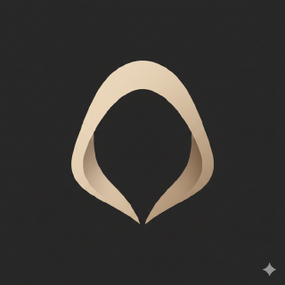

The people behind Organic Maps
We are a small team of enthusiasts building a free, open-source maps app that works offline, shows no ads and does not track you.
Lines
- Android
- iOS
- C++ core Under construction
- Map data Under construction
- Design Under construction
- Community Under construction
-
Zone 1 Founders

Alexander Borsuk
Co-founder
Interchange, all lines
Co-founder of Organic Maps and creator of MAPS.ME.
-
Zone 2 Core team

Kiryl Kaveryn
iOS
Line 2 · iOS
The team's iOS expert, working across the whole iOS app.
-

Mikhail Listratsenka
Android & Wear OS
Line 1 · Android
Works across the whole Android app and the Wear OS watch app.
-
This could be you
Open station, every line
Code, translations, map edits or helping other users — every contribution counts.

Built together with the community
Organic Maps would not exist without volunteers from all over the world: developers who send fixes, translators, testers, and OpenStreetMap mappers who keep the map up to date.